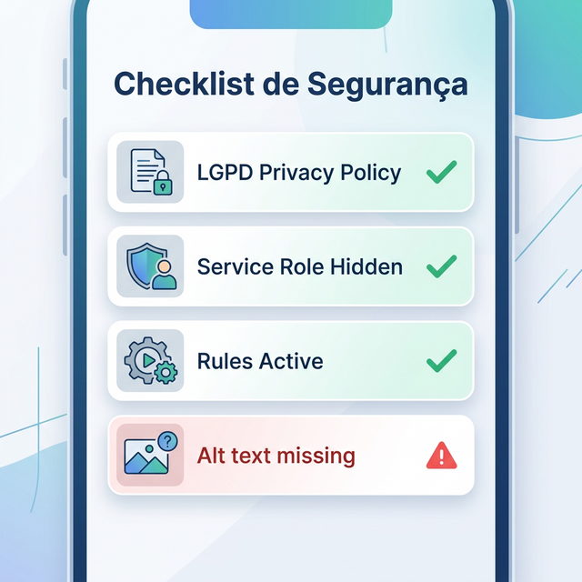

Estudo de Caso 13 — Legislação e Teste Alfa
Objetivo da Semana
Gerar um crivo analítico quanto às normativas legais de mercado garantindo Segurança de Dados (LGPD) e Acessibilidade Sensorial, disparando a primeira leva de pacotes de testes para validação na trilha Alfa do Google Play App Store.
Passo a Passo da Atividade
Peça para sua IA sugerir uma lista de pontos vitais sobre Leis Gerais de Proteção a Dados (LGPD) e Padrões de Acessibilidade a serem observados dentro de ambientes corporativos mobile.
Exemplo de Prompt: "Liste um checklist prático com os 5 principais erros de acessibilidade estrutural e visual cometidos em aplicativos mobile. Foque em aspectos tangíveis de cores, alinhamentos e formulários..."
Com a lista em mãos, cruze seu App gerando o documento listando: Onde ele fere a regulação visual (ex: textos de 12sp difíceis de ler)? Onde a coleta e armazenamento de e-mail de usuários estaria infringindo a finalidade se não houvesse o Termo de Aceite?
Com ajuda do Professor (se necessário o uso de uma conta global da Instituição), suba o Build nas trilhas de Testing da Play Store para convidar sua equipe inteira para receber e testar com sucesso pela primeira vez a versão empacotada no celular Real.
Para concluir as atividades desta semana, reúna todas as informações e artefatos gerados nos passos anteriores e preencha o template oficial de entrega. Faça uma cópia do documento para a sua conta Google e compartilhe-o com o professor.
Acessar Template: Auditoria Final de Segurança, LGPD e Acessibilidade
📱 Estudo de Caso: FinanCampus
Veja as verificações de segurança e acessibilidade do FinanCampus.

Checklist de segurança (todos verificados):
- ✅ Senhas armazenadas com bcrypt (Firebase Auth gerencia automaticamente)
- ✅ API Key anon usada no app; service role key não exposta
- ✅ Security Rules ativas em todas as coleções com dados de usuários
- ✅ HTTPS em todas as chamadas (Firebase por padrão)
- ✅ Política de privacidade LGPD publicada
Checklist de acessibilidade:
- ✅ Contraste texto/fundo: ratio 7.2:1 (acima do mínimo 4.5:1)
- ✅ Fonte mínima de 14sp em todos os textos do app
- ✅ Botão (+) com área de toque de 56×56 dp
- ⚠️ Ícones de categoria sem rótulos alternativos (ajuste planejado para v1.1)
App publicado no Teste Interno com 4 testadores (os próprios membros do grupo). APK instalado via Play Console e 2 bugs de usabilidade identificados e corrigidos, reportados adequadamente nos Relatórios em Grupo.